Crystal Carter
Head of AI Search & SEO Communications, Wix
From Best Practice to Next Practice: Marketing Agility in the AI Era
LinkedInMove beyond experimentation.
Meet the minds turning AI into business impact.
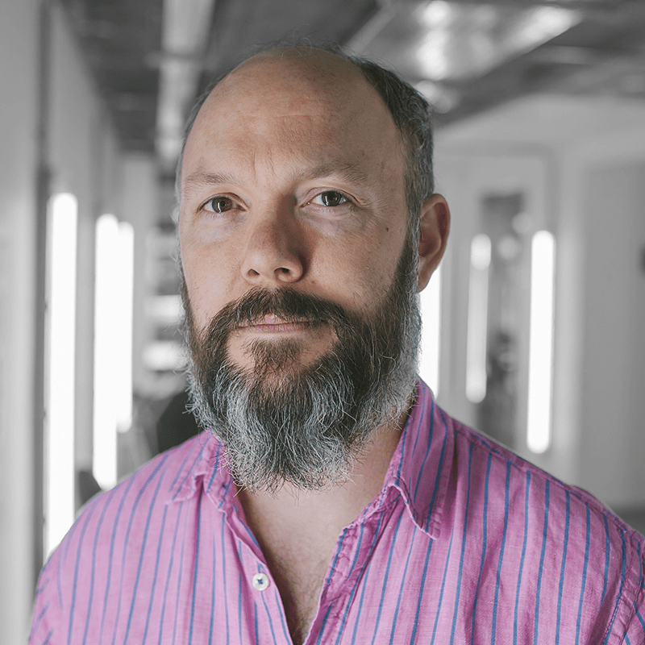
International perspectives.
One exceptional day.
Thursday, 15 October 2026 · 360 Nicosia
Secure your seat for a day of ideas, expertise and connections.
Secure your seatMove beyond experimentation. Start turning AI into real business results.
Join us in Cyprus for a high-impact, one-day conference designed for senior marketing professionals who want to move beyond experimentation and into real business results with AI.
This exclusive gathering brings together leading international experts and top marketing decision-makers to explore how AI is transforming strategy, creativity, performance, and ROI.
Through a carefully curated agenda of keynotes, discussions, and conversations, attendees will gain practical insights, proven frameworks, and forward-thinking perspectives—without the noise.
Meet the international experts exploring what AI means for the way we create, connect and grow.
Head of AI Search & SEO Communications, Wix
From Best Practice to Next Practice: Marketing Agility in the AI Era
LinkedInPrivacy Technologist & Commissioner, UK Data & Marketing Regulator
The Trust Dividend: How Ethical AI Outperforms Creepy Marketing Every Time
LinkedInAuthor of Hello $Firstname and CXO at Agillic
Beyond Hello $Firstname – The Real Meaning of Personalization and How AI Helps Scale It
LinkedInArchitect & Creator of Athens Surreal
The algorithm made me do it
LinkedInFounder, AI Made Simple
Beyond Personal Productivity: Building Agentic Marketing Teams That Actually Compound
LinkedInCo-Founder, Webarts Limited
Topic TBA
LinkedInKeynote Speakers from Europe’s Leading Marketing Practices
Join us for a day of expert-led talks, dynamic panel discussions, and Q&A sessions, where industry leaders will share insights on how AI is reshaping content, performance, branding, and customer engagement.
Covering the most critical topics shaping modern marketing.
Explore how AI is transforming search, visibility, and the way brands are discovered online. Learn why traditional SEO is evolving into a broader AI discovery ecosystem — and what marketers need to do to adapt.
Drawing from experience advising brands, boards, financial institutions, and regulators across Europe, we will unpack the evolving relationship between AI, consumer trust, privacy regulation, and responsible data practices.
Understand how leading brands are rethinking creativity, strategy, and marketing workflows with AI-powered tools and systems.
Move beyond experimentation and discover how organizations are turning AI investments into measurable business outcomes and competitive advantage.
Keynotes. Discussions. Conversations.
A day designed to move you forward.
An executive-level gathering at the intersection of marketing, business, technology, and innovation.
senior professionals
A focused, high-value networking environment built for meaningful conversations and strategic connections.
AI is redefining how brands communicate, compete, and grow. This event offers the opportunity to understand not only the tools — but the strategic shifts behind them.
Whether you’re exploring AI adoption or scaling existing initiatives, this conference will help you understand what matters now — and what comes next.
PRACTICAL INSIGHTS. LASTING CONNECTIONS.Get your ticketInsights from leading international AI and marketing experts.
Real-world frameworks and practical business applications.
Strategic discussions on visibility, trust, creativity, and ROI.
Executive-level networking with senior decision-makers.
Actionable ideas you can apply immediately within your organization.
360 Nicosia 34th floor
One day above the city. A chance to step back, connect with your industry, and look ahead.
Thursday, 15 October 2026
Afroditis 10, Nicosia 1060, Cyprus
The organisations helping bring the marketing community together.
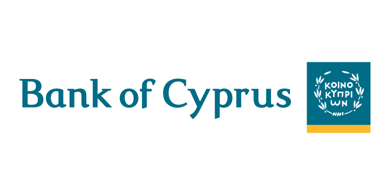
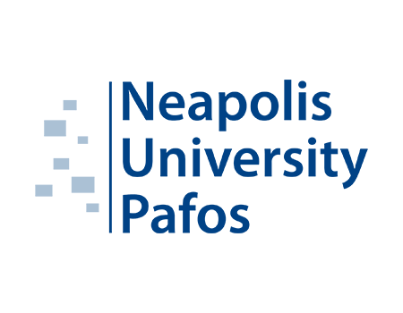
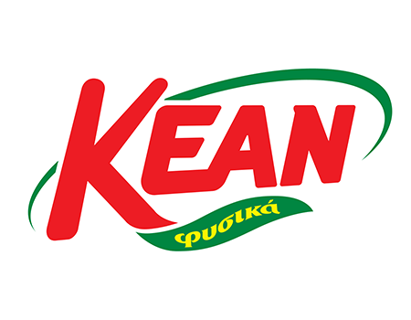
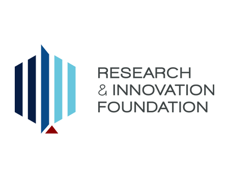
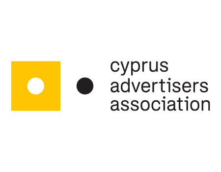
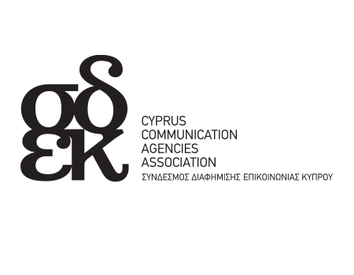
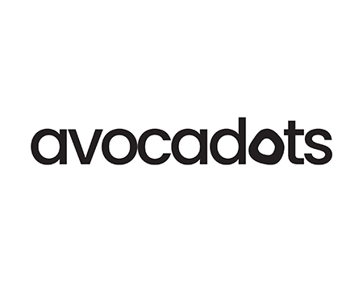
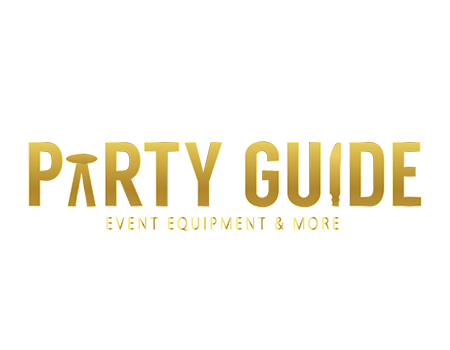
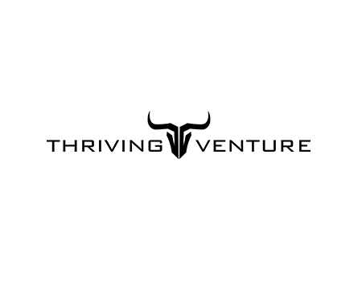
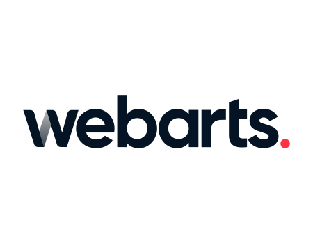
Explore the opportunities to reach senior marketing decision-makers.
By sponsoring the AI in Marketing Conference, you not only elevate your brand but also position your company as a leader in the marketing ecosystem. Make impactful connections, generate valuable leads, and enhance your brand’s presence within the industry!
Discuss sponsorshipContact us to learn more about the summit. Tell us what you’re interested in and how you’d like the team to reach you.
Send your enquiry and the BOUSSIAS Cyprus team will be in touch.
Fields marked * are required.AI is changing marketing. Be part of the conversation.